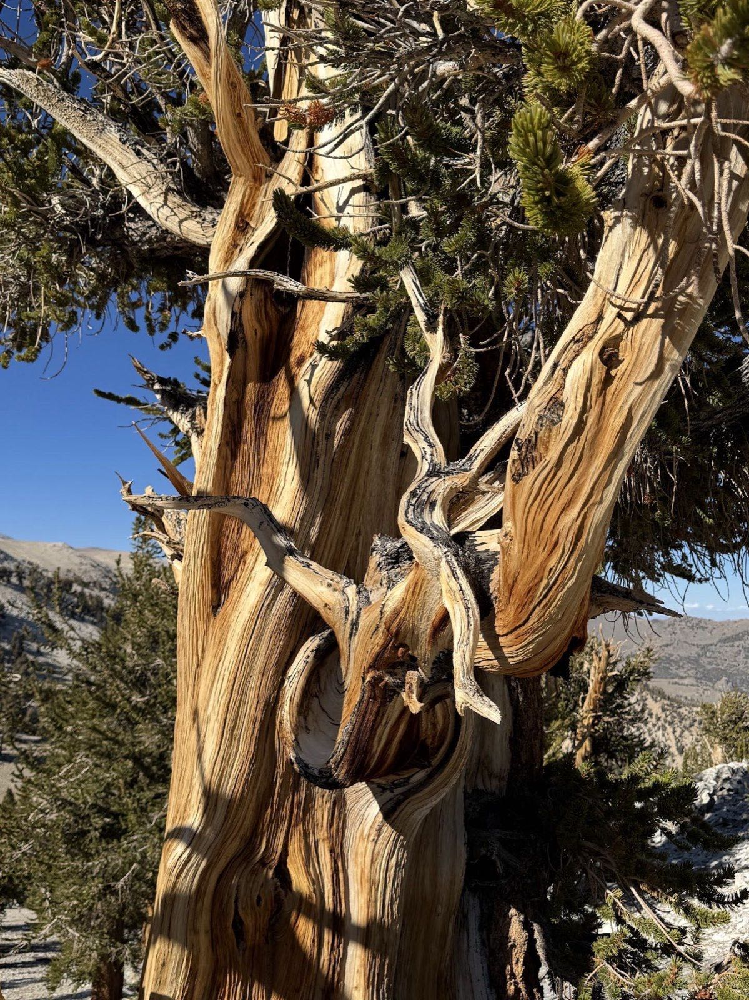
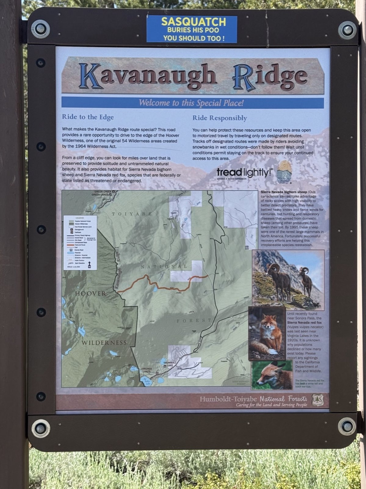
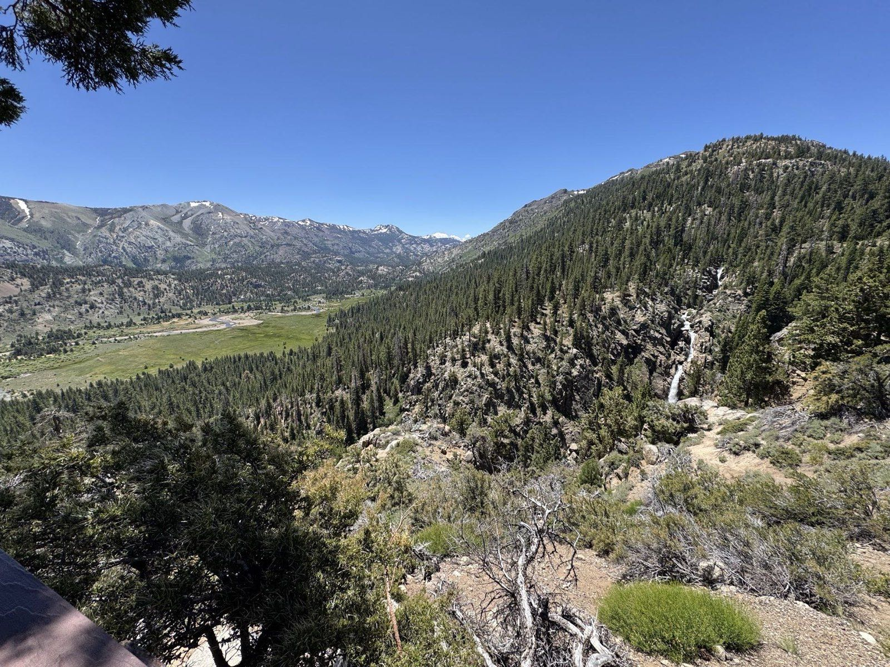
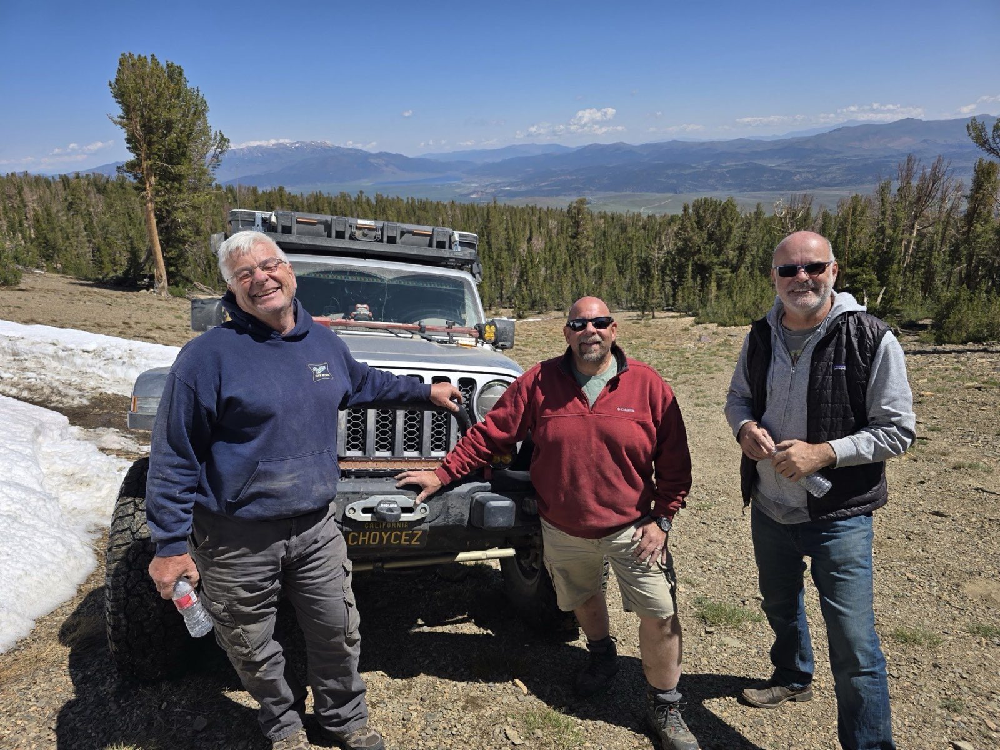
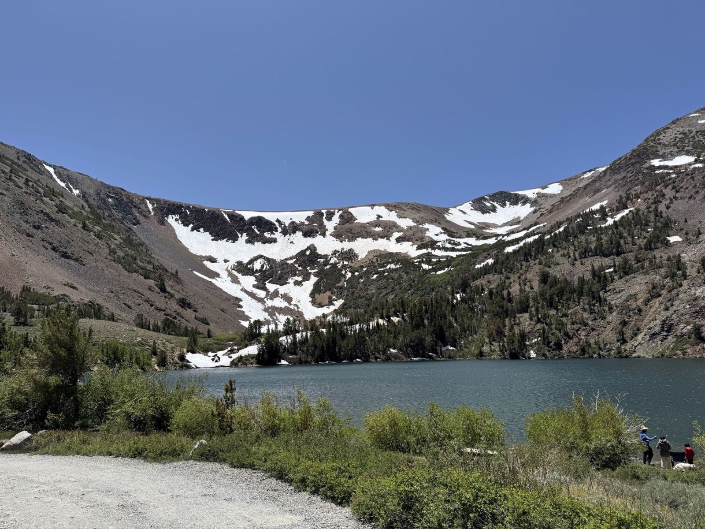
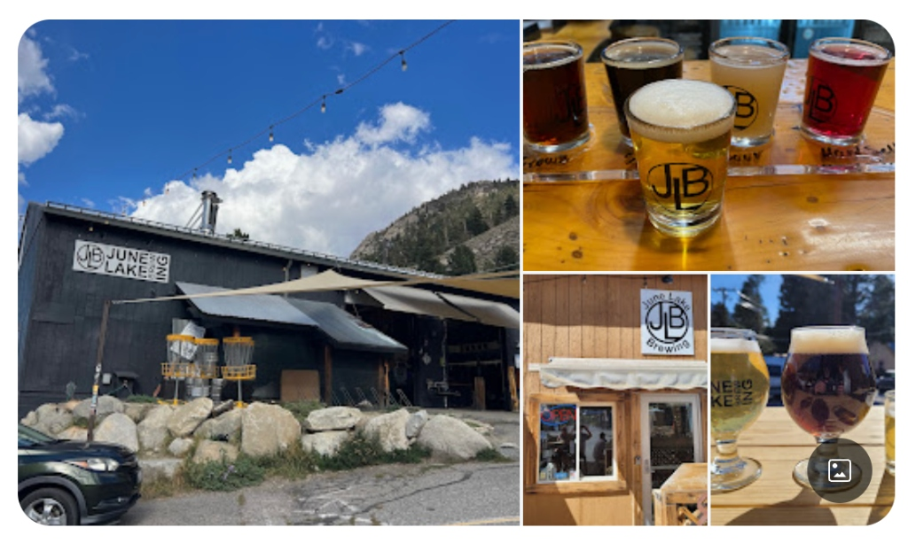

Mike is organizing a mid-summer trip to explore the Kavanaugh Ridge / Bodie / 395 / Bristle Cone Mammoth area. We plan on having 8-10 rigs. We'll camp at the base of Kavanaugh Ridge (off of Dunderberg Meadow Road) and east of the town of Bodie along the Bodie High Desert Highway. Along the way, we'll explore Del Monte Canyon Road, the historic Aurora ghost town ruins, and Esmeralda. **Get ready, here we come!**
📢 Rally Point Sign-Up is Open!
The official Overland Bound Rally Point for this trip is now open. Please sign up to reserve your spot and join the convoy discussion!
Sign Up on Rally PointGet Ready Before We Go
🛑 SAFETY REQUIREMENTS
Rear Amber Chase Light and HAM Radio communications are REQUIRED to travel with the group.
Why Amber Chase Lights?
Dusty trails are common – amber lights penetrate dust far better than white or red, helping prevent rear-end collisions in low visibility. Learn more about Why Chase Lights?
HAM Radio
Program to 146.460 MHz (simplex). Handhelds work great even without a license for listening.
If you don't have a ham radio yet, check out our guide to get started.
Other Essentials
- Offline navigation (download GPX from Rally Point – limited/no cell service)
- Extra fuel
- Off-road tires, full-size spare, recovery gear
- Plenty of water, desert prep, meds, emergency kit
⚠️ Group Trip Agreement & Waiver
Before signing up, please review the Voluntary Acknowledgment of Risk and Group Trip Agreement. By RSVP'ing and participating in this trip, you certify that you have read, understood, and voluntarily agreed to these terms.
✍️ Sign Agreement OnlineWe may even see some snow action!
📍 Information
- Trip Status: Rally Point sign up is open
- Team Lead: Michael Norton (Michael_Exploder)
- Planned Capacity: 8-10 rigs
- RSVP: Rally Point Link
Points of Interest
Kavanaugh Ridge
A spectacular high-alpine trail in the Eastern Sierra offering breathtaking views of Mono Lake and the surrounding peaks. Access involves rocky terrain and high elevation.
Bodie State Historic Park
A genuine California gold-mining ghost town. Visitors can walk down the deserted streets of a town that once had a population of nearly 10,000 people. Learn more at the official Bodie State Historic Park website.
Del Monte Canyon Road
A rugged backcountry route winding through scenic canyons and hills in the Bodie Hills, offering a fun off-road driving experience and access to historical mining sites.
Aurora Ghost Town & Esmeralda Ruins
Located just across the border in Nevada, Aurora was a bustling gold-mining boomtown in the 1860s. Today, only ruins of its brick buildings and foundations remain, offering a glimpse into the wild mining history of the Esmeralda region. For details and travel info, check out Travel Nevada.
Ancient Bristlecone Pine Forest
Home to the oldest living trees on earth, some exceeding 4,000 years of age. A unique high-altitude landscape. Plan your visit via the U.S. Forest Service.
Mammoth Lakes
A stunning basecamp for adventure, known for its majestic mountains, crystal clear lakes, and endless outdoor opportunities.
Trip Gallery
All the goodness from past trips!





Dates
July 17 – July 19, 2026
Meet-up Location
Date: Friday, July 17, 2026 (TBC)
Time: 7:00 AM
Location: McDonald's at Santa Rita and Highway 580 E. (Standard Deployment Point)
37°42'02.9"N 121°52'10.7"W
37.700795, -121.869642
Potential Friday Night Camp Spot
Location: Potential Friday Night Camp Spot
Coordinates: 38.14664, -119.22348
Area: Green Creek Road, Humboldt-Toiyabe National Forest, Bridgeport, CA
Trail Location
Location: Kavanaugh Ridge Trail
Coordinates: 38.08714, -119.27460
Area: Humboldt-Toiyabe National Forest, Bridgeport, CA
MUST SEE POI (for some of us ;) )
Location: June Lake Brewing
Address: 131 S Crawford Ave, June Lake, CA 93529
Coordinates: 37.7787, -119.076
Details: Brewery (4.5 stars, 423 reviews)

Get DirectionsFire Restrictions & Permits
Fire Restrictions: Dispersed camping on Green Creek Road and at Kavanaugh Ridge is located in the Bridgeport Ranger District of the Humboldt-Toiyabe National Forest (California side). Under seasonal Stage 1 fire restrictions, wood and charcoal fires are prohibited outside of developed recreation sites (which means campfires are NOT allowed at our dispersed camp spots).
Permit Required: A free California Campfire Permit is mandatory for operating portable gas or propane stoves or lanterns. You must obtain and carry a valid permit during the trip.
Obtain Campfire PermitWeather
Preparing for the trip, check the weather at our key locations: